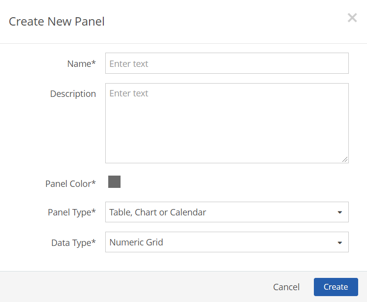
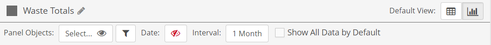
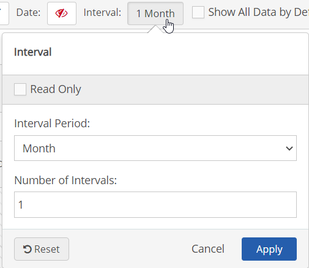
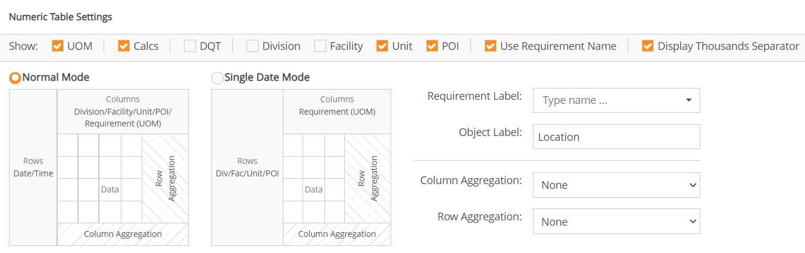
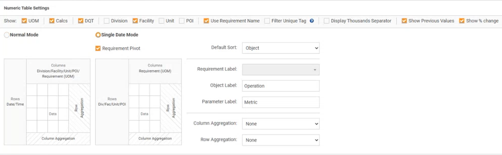
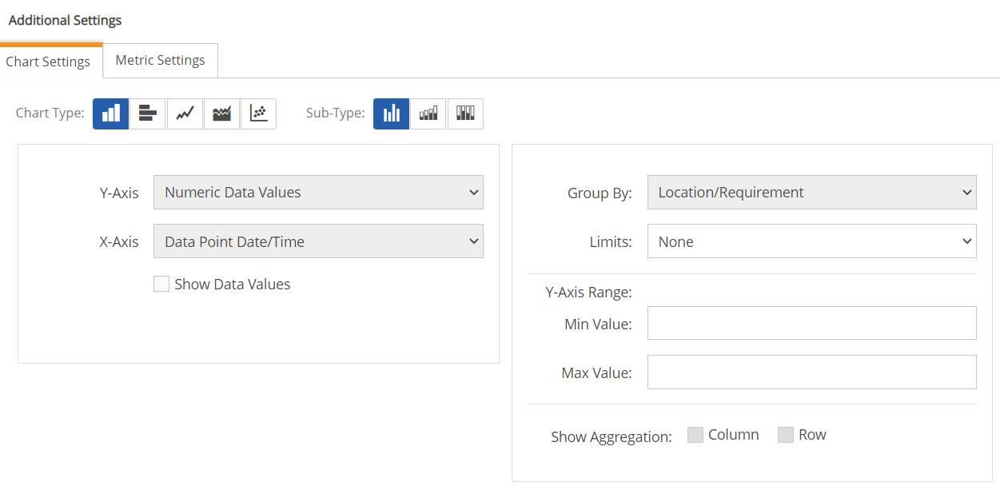

From the Add New Panel dialog, click Create New Panel.
Or, select panel template(s) to add and click Add selected Panels.
Enter a name for the panel and optional description.
Choose a panel color (color for the top bar and frame).
For the Panel Type, select Table, Chart or Calendar.
For the Data Type, select Numeric Grid.

Select Create.
Once the panel has been added to the page, click Edit Panel Contents to configure the settings. You will be prompted to save the page first before proceeding to the configuration screen.
Default View: Select either the Table or Chart icon on the top bar to set the default view. Users will be able to switch between views, to see underlying chart data or a visual view of table data, so you should configure both table and chart settings.
Data Settings
The settings in the top bar, including objects and dates, apply to both tables and charts.

Panel Objects
To select the objects to be displayed in the panel, see Set Panel Objects Filter. Objects used in the panel may be any subset of the objects selected in the Page Objects filter.
If the Ignore Page Filters panel setting is active, you will override any of the objects selected in the Page Objects filter. If Show Users All Objects in System is active in the page and/or panel settings, users may select any object in the system, regardless of their Management System object permissions. Users will then be able to view numeric data for any object, but will still require proper permissions in order to edit the data.
By default the panel will use the date range selected for the page so the Date box is initially disabled. If desired, a date range selector may be enabled for the panel which will operate independently of the page date selector. You may pre-configure the panel to show the relative periods that users will need (such as This Month/Last Month). You may also decide whether you want users to be able to set a custom date range with specific start and end dates, or use only the pre-configured date range. To configure the panel date range, see Panel Date Selector.
Interval
The Interval shows the expected data entry period. Select the box to open the settings dialog.

Read Only: If Interval Type is set to Read Only, users will be limited to entering data according to the set interval. Otherwise, users may change the interval at data entry as needed.
Interval Period: The interval to show for data entry: Minute, Hour, Day, Month, Quarter, Year. This field sets the time between each row/record on the table, with one row for each [Number of Intervals] of [Interval period] from the begin date to the end date for the page. If either the 'from' or 'to' date is not specified for the page, only one row will initially display on the table.
Number of Intervals: If a new date is added to the table the default date is x intervals after the previous date.
Show All Data by Default: If true, the Show All Data field on the table will be checked by default and a row will be visible for each unique date/time for which there is data. (The filter for data that matches the interval period is disregarded.) Users may check or uncheck the option in the table view. The option is only visible for Normal Mode when not Read Only.
Numeric Table Settings
The settings for table view allow you to select the type of data to include and the name to use for the requirements. You may also include column and row aggregations, as shown in the image.

UOM: If checked, the unit of measure will be appended to the column label in square brackets. The UOM will also display in the column selector and the tool tip.
Calcs: If checked, calculated requirements will be included along with parameters.
DQT: If checked, include Data Quality Template fields for parameters, if present. All DQT field types are supported, except linked lists.
Location Labels (Division, Facility, Unit, POI): Object types that are checked will be included in the column head. If Use Requirement Name is unchecked and no Requirement Label field is selected, then the object name(s) alone (such as Facility or POI) will be shown in the column head.
Use Requirement Name: If checked, the name of the requirement will be displayed as the label in the column head. You can substitute a requirement name stored in a custom field on the requirement instead by selecting the field.
Display Thousands Separator: Show separator for values in thousands ("1,000" instead of "1000")
Default Sort: Choose the default sort order.
Object Label: Label to use for the Location (default value) shown in column one in Single Date Mode.
Column Aggregation Select an aggregate function for the columns, if desired. Available aggregation types are Count, Sum, Average, Maximum or Minimum. Default is None.
Row Aggregation: Select the aggregate function for the rows, if desired. Default is None.
Normal Mode
In normal mode, each row in the table represents a date/time.
To use requirement aliases, as stored in a pre-configured custom field, uncheck Use Requirement Name. Click in the Select box and enter a few characters of the name of the custom field that contains the value for the alias, then select the field from the list.
Platform Configuration: Requires a custom field to be applied to the requirements via a custom field template. See Requirement Names in Numeric Panels for more details.
Single Date Mode
In single date mode, each row represents a location. A single row will be presented for data entry with the date/time field displayed above the table. Either a location or requirement name (or requirement label) must be selected.
When single date mode is selected, you can enable Requirement Pivot to allow users to display requirement names down a single column.

When single date mode is enabled, the following additional settings are available:
Filter Unique Tag: If checked,only display requirements that are assigned a unique tag.
Show Previous Values: If checked, the previous value will be included.
Show % change: If checked, the percent change between the current value and the previous value will be included.
Chart Settings
The chart settings require you to first select the chart type. The options for each setting depend on the field selections made for the table view, as well as the Chart Type selected.

Chart Type and Sub-Type: Select the icon that represents the Chart Type you want.
Chart types and sub-types available are: Column (subtypes Regular, Stacked, 100% Stacked), Bar Chart (subtypes Regular, Stacked, 100% Stacked), Line, Area, Pie, Gauge, Scatter
X-Axis: Default=Numeric Data Values
Y-Axis: Default=Data Point Date/Time
Y-Axis Range: Minimum and maximum values for the y-axis range
Show Data Values: Check to show raw values in the chart view.
Group By: Default=Location
Limits: To display data limits in charts, select Internal, Regulatory or Both. Limits display as dotted lines in the chart types Line, Column or Area. The line color matches the color of the requirement; Regulatory limits are shown as a heavier weight line than Internal limits. Default is None.
Show Aggregation: Choose whether to show aggregations by Column or Row. The aggregation type for Columns and Rows is selected in the Numeric Table Settings and reflected in the Chart settings accordingly.